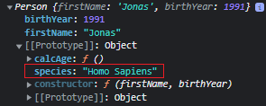
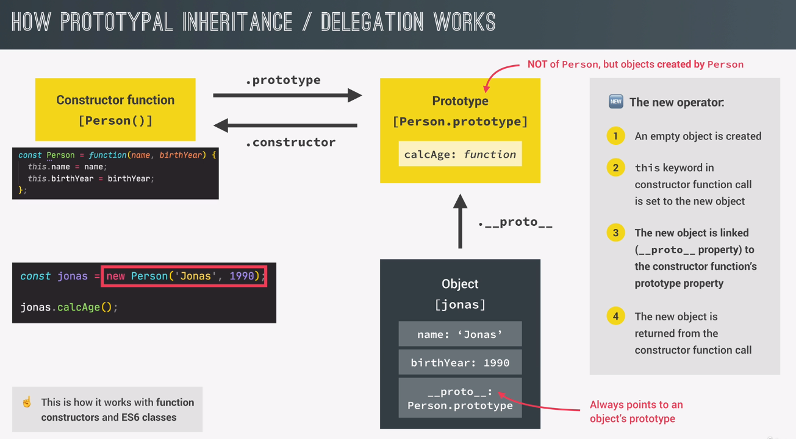
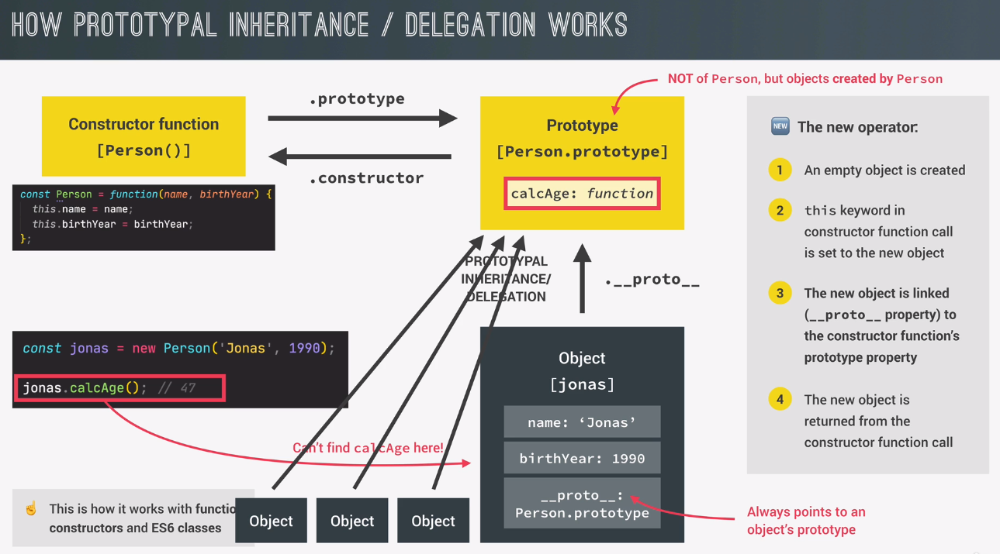
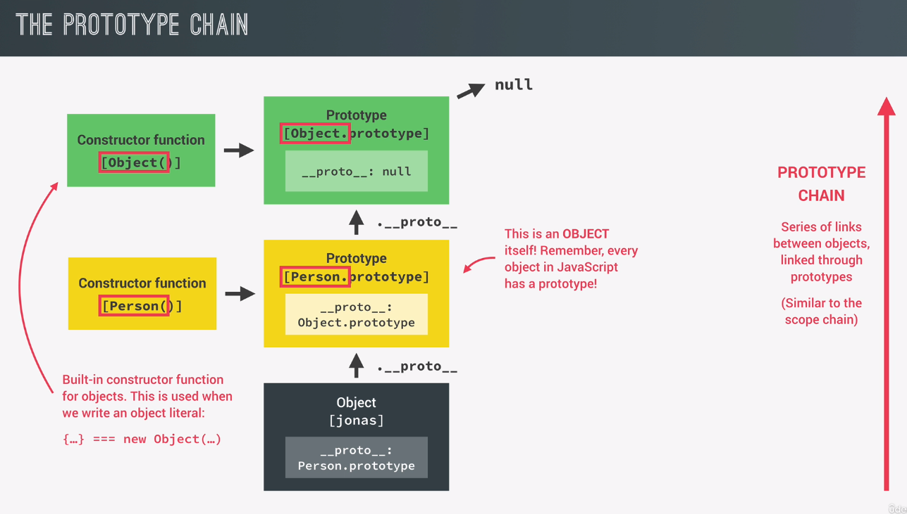

first each and every function in JavaScript automatically has a property called prototype. And that includes, of course, constructor functions.
every object that's created by a certain constructor function will get access to all the methods and properties that we define on the constructors prototype property.
all the objects that are created through this constructor function here will inherit, so they will get access to all the methods and properties that are defined on this prototype property.
This adds a method to the Object Function using a prototype of the Person Object.
Now, each object created by this constructor function will now get access to all the methods of this prototype property.
You can then add this method on the 'jonas' Object, even though it's not part of that Object itself.
Now, only 1 copy of calcAge() exists, but but then all of the objects that are created using this constructor function can basically reuse this function on themselves.
const Person = function (firstName, birthYear) {
this.firstName = firstName;
this.birthYear = birthYear;
};
const jonas = new Person('Jonas', 1991);
// Add Prototype
Person.prototype.calcAge = function () {
console.log(2037 - this.birthYear)
}
console.log(Person.prototype)
jonas.calcAge();
Every Object has a special property called __proto__
This shows the prototype of an Object
So the prototype of the Jonas object is essentially the prototype property of the constructor function.
The result is the same as console.log(Person.prototype).
NOTE: Person.prototype is NOT the prototype of Person. It is instead what's gonna be used as the prototype of all the objects that are created with the person constructor function.
this confusion comes from bad naming of this property. So the fact that it's called prototype kind of implies that this is the prototype of person,but as we just learned, it is actually not.
Probably shouldn't be called prototype but instead something like .prototypeOfLinkedObjects.
This would make it easier to think about how it works.
Step #3 when creating a new Object constructor creates the __proto__ property.
it creates this proto property and it sets its value to the prototype property of the function that is being called.
console.log(jonas.__proto__)
Confirm if the prototype of the Object Function is the same as the new Object you created.
This returns true.
console.log(Person.prototype.isPrototypeOf(jonas))
You can also add a property to the prototype. All Objects created form it will then have access to it.
When you view the 'jonas' Object, the new property only appears on the prototype of the Object.
But running jonas.species returns the string text.
Person.prototype.species = 'Homo Sapiens';
console.log(jonas)
console.log(jonas.species)
everything starts with the person the constructor function that we've been developing. Now, this constructor function has a prototype property which is an object and inside that object, we defined the calcAge method and person dot prototype itself actually also has a reference back to person which is the constructor property.
Now remember, person dot prototype is actually not the prototype of person but of all the objects that are created through the person function
when we call a function, any function with the new operator the first thing that is gonna happen is that a new empty object is created instantly.
Then the this keyboard and the function call is set to the newly created object. So, inside the function's execution context this is now the new empty object
that's why in the functions code we set the name and birth year properties on the this keyword because doing so will ultimately set them on the new object.
now the new object is linked to the constructor functions prototype property. So in this case, person dot prototype. And this happens internally by adding the underscore, underscore protal property to the new object.
person dot prototype is now the new objects prototype which is denoted in the underscore, underscore proto property of Jonas. So again, underscore proto always points to an object prototype and that is true for all objects in JavaScript.
finally the new object is automatically returned from the function unless we explicitly return something else. But in a constructor function like person we usually never do that. Okay, and with this the result of the new operator and the person constructor function is a new object that we just created programmatically and that is now stored in the Jonas variable
this whole process that I just explained is how it works with function constructors and also with ES6 classes but not with the object dot create syntax that we're gonna use later.
here we are attempting to call the calcAge function on the jonas object. However, JavaScript can actually not find the calcAge function directly in the jonas object, right? It is simply not there
if a property or a method cannot be found in a certain object JavaScript will look into its prototype
That's how the calcAge function can run correctly and return a result.
So, the jonas object inherited the calcAge method from its prototype or in other words it delegated the calcAge functionality to its prototype.
the beauty of this is that we can create as many person objects as we like and all of them will then inherit this method. So we can call this calcAge method on all the person objects without the method being directly attached to all the objects themselves
this is essential for code performance. Just imagine that we had a 1,000 objects in the code and if all of them would have to carry the calcAge function around then that would certainly impact performance. So instead, they can all simply use the calcAge function from their common prototype
the fact that Jonas is connected to a prototype and the ability of looking up methods and properties in a prototype is what we call the prototype chain.
remember that person dot prototype itself is also an object and all objects in JavaScript have a prototype, right? Therefore, person dot prototype itself must also have a prototype.
And the prototype of person dot prototype is object dot prototype.
person dot prototype is just a simple object which means that it has been built by the built in object constructor function and this is actually the function that is called behind the scenes whenever we create an object literal.
what matters here is that person dot prototype itself needs to have a prototype and since it has been created by the object constructor function its prototype is gonna be object dot prototype.
this entire series of links between the objects is what is called the prototype chain
and object dot prototype is usually the top of the prototype chain which means that it's prototype is null. it's underscore proto property will simply point to null which then marks the end of the prototype chain.
in a certain way the prototype chain is very similar to the scope chain but with prototypes. So, in the scope chain whenever JavaScript can find a certain variable in a certain scope, it looks up into the next scope and a scope chain and tries to find the variable there. On the other hand in the prototype chain whenever JavaScript can find a certain property or method in a certain object it's gonna look up into the next prototype in the prototype chain and see if it can find it there, okay?
So again the prototype chain is pretty similar to the scope chain but instead of working with scopes, it works with properties and methods in objects, all right?
.................
.................